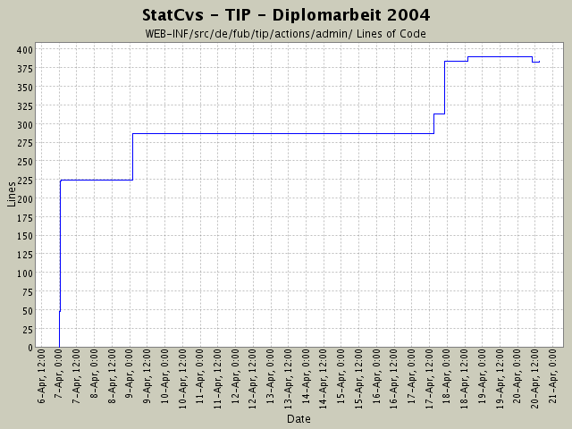

Summary Period: 2004-04-07 to 2004-04-20
[root]/WEB-INF/src/de/fub/tip/actions/admin

Total Lines Of Code:
384 (2004-06-13 13:05)
| Author | Changes | Lines of Code | Lines per Change |
|---|---|---|---|
| hirsch | 12 (100.0%) | 419 (100.0%) | 34.9 |
JavaDoc-Fehlerchen entfernt
5 lines of code changed in:
NAVBACK überall eingebaut.
Logout-Nachricht wird jetzt in Action erzeugt und
in JSP angezeigt.
2 lines of code changed in:
ganz dummer Fehler:
falscher Schlüssel für ResourceBundle -
ja, dann wird auch nix angezeigt!
3 lines of code changed in:
Umstellung bei ActionMessages auf unbenannten
Parameter zum Speichern der Nachrichten (globals.Message)
und bei Anzeige auf Einbindung der STRUTS-EL
9 lines of code changed in:
LocationEventResetter löscht jetzt sowohl event als auch
locationevent-Tabelle!
77 lines of code changed in:
Anlegen diverser neuer Rümpfe zur Implementierung
neuer Aktionen jeweils mit:
* Action
* LogicObjekt
* LogicFactory und wenn fehlend:
* VO und
* VOContainer.
26 lines of code changed in:
StatusAnzeige implementiert :-) JUCHHE!
Logik und Actions sind komplett fertig.
67 lines of code changed in:
DUMMER FEHLER:
beim Zusammenbasteln der SQL-Befehle muss beim
Zeilenumbruch *immer* ein Leerzeichen mit im String stehen.
D.h.
"abc" + "def" gibt ParserException, aber
"abc " + "def " geht astrein!
Anpassung der IF_Einrückungen an SunCodingStandard!
6 lines of code changed in:
Einbauen der DispatchAction
in admin-Menü und Struts-config.xml
3 lines of code changed in:
DispatchAction hinzugefügt ....
derzeit nur leere Methoden
87 lines of code changed in:
Pfade in struts-config.xml angepasst
87 lines of code changed in:
VO:
alle ViewObjekte implementieren jetzt auch
java.io.Serializable - nur so geht später mal RMI!
Anonsten Umstrukturierung und Javadoc in action-Package -
Unterpakete angepasst an Menüstruktur
(nur Skelett gelegt, noch nichts geändert)
47 lines of code changed in:
Generated by StatCvs v0.2-dev